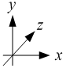
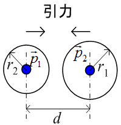
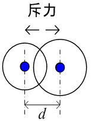
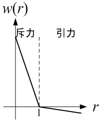
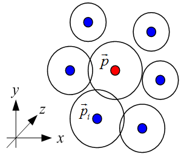
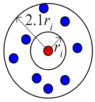
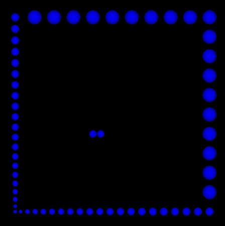
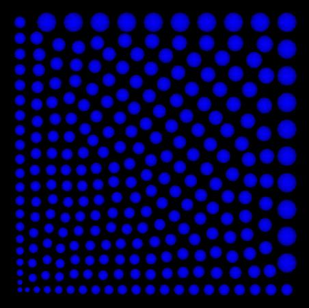
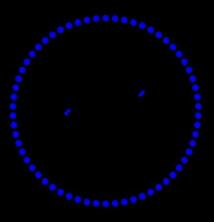

広告
バブルメッシュ法(bubble mesh method)
解析の精度を上げるためには、できるだけ節点を滑らかに配置する必要があります。 また、メッシュ作成もスムーズに行うことができます。ここでは、次のような方法で節点を配置してみます。



上図の様に直交座標上に2つの節点があるとします。それぞれ位置ベクトルを
 ,
,
 、半径をr1
, r2
とします。この時、2つの節点に働く力は次式となります。
、半径をr1
, r2
とします。この時、2つの節点に働く力は次式となります。

ここで、wは重み関数であり、 この式は重み関数と方向ベクトルの積を表しています。 ここで、左図では引力、右図では斥力が節点間に働いています。 これは、次式の重み関数で表されます。

w < 1の場合は、斥力、 w > 1の場合は引力が働きます。 次に下図の様に周囲に複数の節点がある場合を考えます。

この場合は、節点に働く力は次式となります。

これは、斥力が正の向きを表しています。 従って、タイムステップごとの節点の方向ベクトルは次式なります。

ここで、cは緩和係数である。
節点の追加・削除
滑らかな節点を配置するためには、節点を追加・削除する必要があります。

上図の様に節点ごとに周囲の節点の粗密を考えます。 2次元の場合、節点の追加・削除の条件は次式なります。
節点削除：
節点追加：
ここで、節点の数密度をn(ri)です。
節点半径の補正
節点の半径は、次式の様に距離の加重平均で補正しました。

ここで、wは重み関数で次式となります。

補正はタイムステップごとに行います。
結果
2次元の場合、下図の様な結果になりました。
デローニ分割後

矩形


円形


| prev | | | up | | | next |